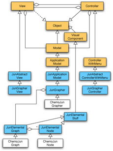
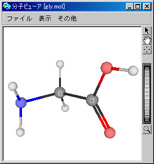
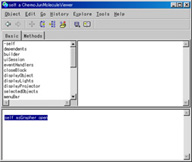
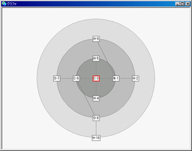
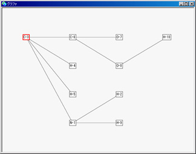

ノード（JunElementalNode）とアーク（JunElementalArc）の集合であるグラフ（JunElementalGraph）の操作系であるグラファ（JunGrapher）を継承して、化学関連のためのグラファ（ChemoJunGrapher）が作成されています。
|  |
| グラファの構造 |
隣接行列で実装された高速に動作するグラフであり、有向グラフ、無向グラフ、深さ優先での訪問、幅優先での訪問、ダイクストラの最短経路計算、などなど多彩な機能を有することになります。分子ビューアや分子オブジェクトは、容易にグラフへと変換でき、すぐにグラファにかけることができます。
|  |  |  |
| グリシン分子 | self asGrapher open | 注目する炭素を中心に同心円整列 |
ある注目する原子からの隔たり（結合数）を距離空間に写像して描き出すことが容易となります。同心円整列の他には樹状整列もあります。
|  |
| 注目する炭素からの樹状整列 |
分子の結合構造をグラフとして扱いたい場合に重宝すると思います。